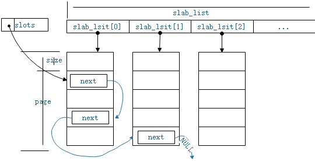
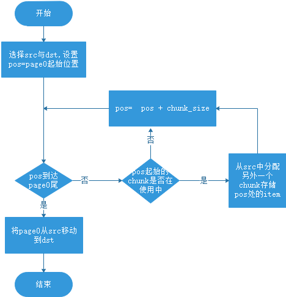

Slab作为一种内存管理方案，其作用主要有以下2点：
a) 避免频繁的内存分配释放造成的内存碎片
b) 减少内存分配操作产生的性能开销
Linux内核数据结构中也有slab的设计，Linux提供了一套接口，使用这套接口可以动态创建与释放一个slab结构，该slab的chunk大小通过接口指定， 创建成功后就可以从该slab中动态申请与释放chunk大小的内存用于存储目标数据，例如内核中用于表示进程的结构体task_struc就是使用的slab方式进行管理。memcached与linux内核不同，memcached中在程序启动时即初始化一个slabclass_t的全局数组，每一个slabclass_t结构的chunk大小不同，构成一个全局slab池。memcached中的slab相关操作源码主要集中在源文件slabs.c中，下面对它进行分析。
以下是memcached中对slabclass_t的定义，
typedef struct {
unsigned int size; /* sizes of items */
unsigned int perslab; /* how many items per slab */
void *slots; /* list of item ptrs */
unsigned int sl_curr; /* total free items in list */
unsigned int slabs; /* how many slabs were allocated for this class */
void **slab_list; /* array of slab pointers */
unsigned int list_size; /* size of prev array */
size_t requested; /* The number of requested bytes */
} slabclass_t;slabclass_t对内存的组织可以粗略的用图1-1表示，

图1-1 slabclass_t内存组织方式
slab_list是一个可以动态分配的数组，数组大小以list_size表示，数组中已存储元素数目以slabs表示，数组中每一个元素都表示一个page大小的可用内存(page也称为slab)。在为该slabclass_t新增加内存时，如果slabs等于list_size即表示数据空间已全部占用，需要使用realloc重新分配数组。
slabclass_t中的可用内存总是切割为size大小的chunks，一个page共可以切分为perslab个chunk。
slabclass_t中未被使用的chunk以单链表的方式进行组织，slots即是该单链表的链表头。当从该slabclass_t中申请内存时，返回slots指向的第一个chunk内存；当使用者释放从slabclass_t中申请的内存时，总是插入该chunk到链表头。sl_curr表示当前空闲的chunk数目，即单链表的元素数目。
为了构成单链表，每一个chunk中总是需要存在一个next指针，事实上，每一个chunk大小至少是一个item结构体的大小, memcached中以item表示一个存储对象，item的数据及item结构体实例总是被存储在同一个chunk中，数据紧接在结构体实例之后。而item中包含一个next指针，slabclass_t复用了该指针来组织空闲的chunk。
当为该slabclass_t新增加一个page的可用内存时，该page会被切分为一个一个的空闲chunk，并被插入到slots指向的单链表头。因此slabclass_t中的内存要么属于空闲chunk，由slots管理，要么属于被使用的item，被hashtable索引。
memcached中以一个全局数组slabclass[MAX_NUMBER_OF_SLAB_CLASSES]存储所有的slabclass_t，每一个元素具有不同的chunk大小。但是这之中，slabclass[0]被设计成一个特殊的slabclass_t，item不会存储在slabclass[0]之中，相反，slabclass[0]用来为其它slabclass_t提供内存。
由于item不会存储在slabclass[0]之中，因此slabclass[0]中的slab_list中指向的page都是可用的，当其它slabclass_t需要增加一个page时，可以直接将slab_list中的最后一个page直接移到目的slabclass_t的slab_list的末尾。如果slabclass[0]不存在可用page时，再使用malloc或者其它方式分配内存。
除了从特殊的slabclass[0]移出page以外，有时也需要在其它slabclass_t之间移动page，以根据需要平衡内存分布。Memcached根据一定的策略选择源与目的slabclass_t，将源slabclass_t的slab_list[0]移动到目的slabcalss_t的slab_list末尾。由于可能有item存储在源端的slab_list[0]指向的内存之中，因此在移动page之前需要做一定的处理。移动page的处理流程可以大致以图3-1表示。

图3-1 移动page的处理流程
void slabs_init(const size_t limit, const double factor, const bool prealloc, const uint32_t *slab_sizes) 初始化全局slabclass[MAX_NUMBER_OF_SLAB_CLASSES]，确定每一级slabclass_t的chunk 大小。limit代表slabs可以分配的内存上限；factor表示每一级slabclass_t的chunk大小的倍增因子；prealloc代表是否预分配一块内存；slab_sizes是一个整形数组，如果提供了该数组，各级slabclass_t的chunk大小由数组中的值决定。
static int grow_slab_list (const unsigned int id)确保slabclass[id]中的slab_list数组有足够的空间容纳新增加page，如果空间不足则调用realloc重新分配空间。
static void split_slab_page_into_freelist(char *ptr, const unsigned int id) 将新分配的page切割成chunk,并将chunk连接到slabclass[id]的slots链表头。
static int do_slabs_newslab(const unsigned int id) 为slabclass[id]增加一个新的page，它会调用grow_slab_list确保slab_list空间，从slabclass[0]或者其它方式获得新的page，调用split_slab_page_into_freelist处理新的page。
static void *do_slabs_alloc(const size_t size, unsigned int id, uint64_t *total_bytes, unsigned int flags) 从slabclass[id]中获取一个未使用的chunk，除了做一些必要的检查之外，获取的方式相当简单，直接从slots链表头获取一个chunk即可。另外返回的chunk会做一些初始化设置，如清除ITEM_SLABBED标志，表示该chunk已被使用，设置引用计数为1等。
static void do_slabs_free(void *ptr, const size_t size, unsigned int id)释放ptr指向的item，新该chunk重新插入到slots链表头。初始化一些参数，如flag设置为ITEM_SLABBED表示该chunk未被使用。参数size为item实际使用的内存大小，用作一些信息统计，并非chunk的大小。另外有一种称为chunked的item(见其它解析)，它的flag被设置为ITEM_CHUNKED，释放时需要调用do_slabs_free_chunked函数，以释放相关的chunk。
static int slab_rebalance_move(void)做移动page时的处理操作，确保要移动的page中存储的item已被移动到其它的page中。
memcached中有一个称为slab_rebalance_thread的线程，该线程的作为即在各个slabclass_t中移动page，平衡内存分配。线程中使用一个条件信号量slab_rebalance_cond，当没有平衡任务时，线程一直等待该信号量，处于休眠状态。外界调用slabs_reassign函数启动平衡任务，该函数将发送条件信号量，激活线程。线程按照图3-1的流程，调用slab_rebalance_start设置内存检查pos等，然后调用slab_rebalance_move完成page清理工作，最后调用函数slab_rebalance_finish完成平衡任务，线程再次进入休眠，等待新的平衡任务。